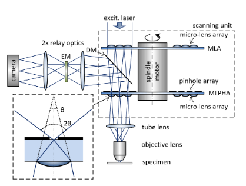
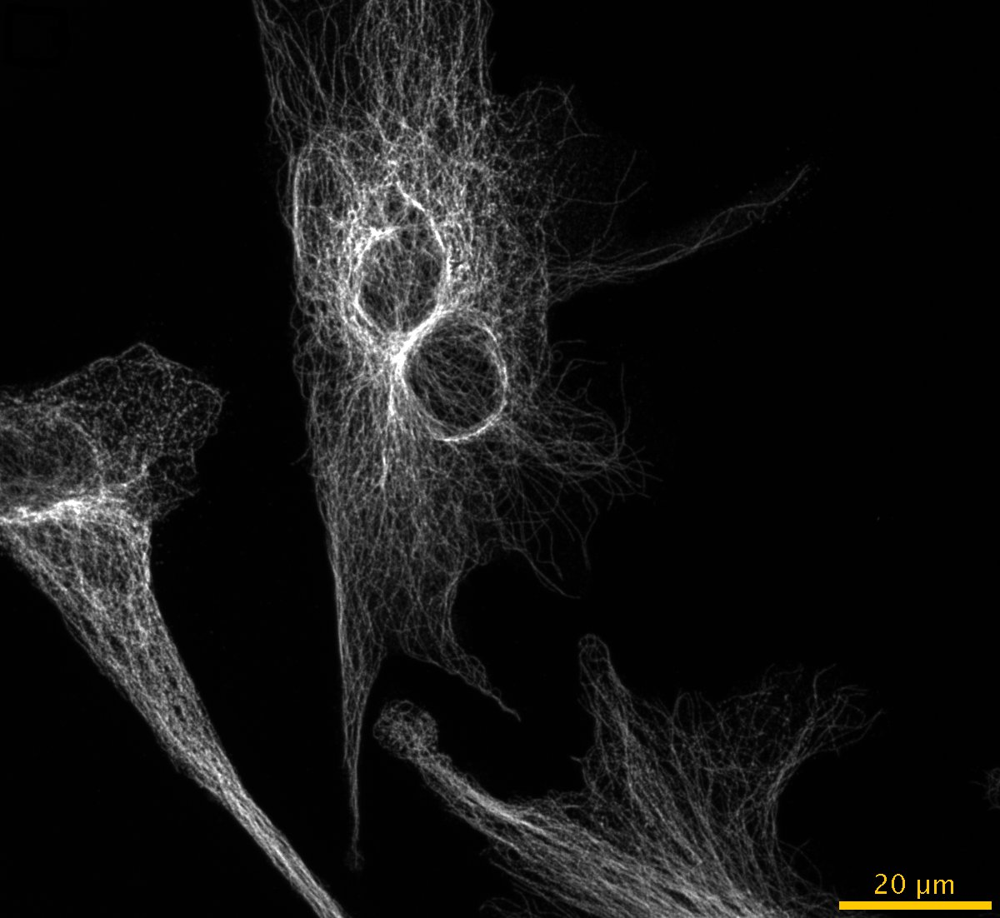

Various microscopy improvements
- Organoid imaging improvements
- Yokogawa Super Resolution
- Quantitative Phase Microscopy
- Document filters of our microscopes
- GPU programming
Nico Stuurman, 2018-08-31
diSPIM Organoid imaging: Decrease Spherical aberation by RI matching
20% Iodixanol (Optiprep) -> Ri ~ 1.36
Organoid membrane label DMEM
Organoid membrane label DMEM + 20% Optiprep
diSPIM Organoid imaging: Decrease Spherical Aberation using a special lens
Z-stack ASI objective
Z-stack Olympus objective
diSPIM: sample placement
Olympus 20x objectives: "According to the manufacturer's drawings the objectives co-focus exactly when they touch, which also implies zero gap between objective and coverslip. However, in practice they co-focus with a gap comparable to the 40x/0.8, with ~200um between the objective bottom and coverslip."
diSPIM: sample placement
diSPIM: sample placement, plan:
- Construct PDMS molds
- Poor Matrigel with organoids in mold, place coverslip on top
- Lift coverslip with Matrigel intact
Yokogawa super-resolution demo
Various instant super-resolution methods based on confocal re-assignmeneas
- Optical Photon Reassignment (OPRA)
- instant SIM (iSIM)
- Rescan confocal
- Zeiss Airyscan confocal
- Olympus and Yokogawa SR spinning disk
ISR, principle:
ISR, principle:
"most probable origin of the detected photons is at maximum of the joint probability function (i.e. the product of the individual probability functions) of excitation and (off-centre) detection."
Yokogawa SR: equipment
Yokogawa SR: equipment
Yokogawa SR: Results
BPAE cells MTs, CSU10
Yokogawa SR: Results
BPAE cells MTs, CSUW1
Yokogawa SR: Results

BPAE cells MTs, CSUW1SR
Yokogawa SR: Results
Show comparison of three systems at same resolutionYokogawa SR: Results
Show ArgoLight slide comparisonYokogawa SR: Results
Video of live cell imageing using SRQuantitative Phase Microscopy: principle
Concept: deduce the "mass" of the sample.
Measure Phase by holographic methods or from brightfield z-stacks.
Z-stacks: Use Transport of Intensity Equation:

In Focus
Brightfield: raw z-stack
z=+1.5µm

z=-1.5µm
Difference image

Zuo et al., https://dx.doi.org/10.1038/s41598-017-06837-1
Microscope filter documentation
Talley Lambert's FPBase.org added capability to store microscope filter data and overlay with fluorophores
https://valelab.ucsf.edu/~nico